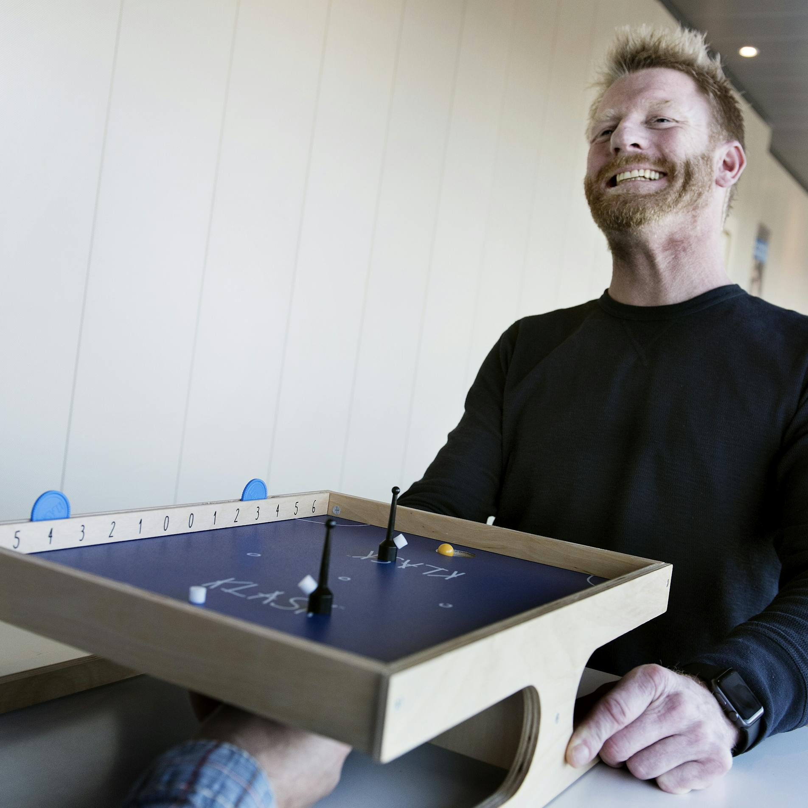
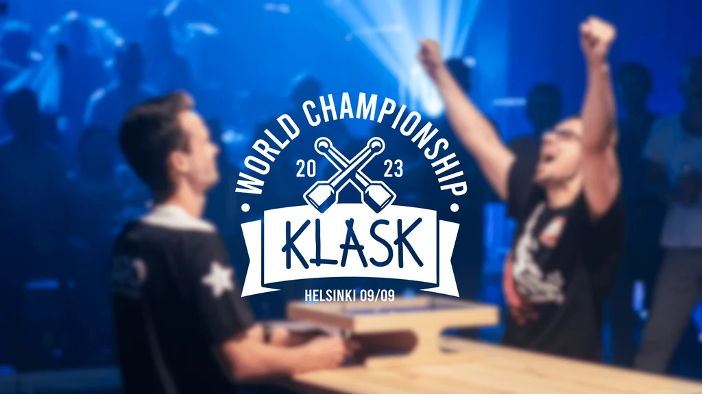

#KLASKLIFE • PLAY LIKE A VIKING
Epic Magnetic Battle da Tavolo
Il leggendario sport magnetico nato in Danimarca: riflessi fulminei, magneti scatenati e sfide testa a testa senza esclusione di colpi.

Il leggendario sport magnetico nato in Danimarca: riflessi fulminei, magneti scatenati e sfide testa a testa senza esclusione di colpi.
Controlli la tua pedina da sotto il tavolo con un magnete potentissimo. Ecco come si segnano i punti:
Invia la pallina arancione dentro la buca avversaria per conquistare 1 punto pulito.
Se due o più magneti bianchi si attaccano al tuo manipolatore, l'avversario guadagna 1 punto.
Attenzione a non far scivolare la tua stessa pedina nella tua buca: regalerai un punto.
Se il magnete inferiore si stacca e perdi il controllo della pedina, il punto va all'avversario.
Falegname e designer danese, Mikkel ha inventato Klask nel suo laboratorio artigianale a Copenhagen nel 2014, unendo la passione per il fai-da-te al brivido delle sfide da bar.
"Volevo un gioco che fosse immediato come il biliardino ma dal design unico, magnetico e imprevedibile."

Dalle qualificazioni locali fino all'ambito trofeo del World Championship ufficiale.

La massima aspirazione di ogni giocatore: l'iconico trofeo dorato del World Championship che celebra l'eccellenza globale del circuito We Are Klask.
Ogni anno, i campioni provenienti da ogni nazione si contendono il diritto di iscrivere il proprio nome nell'albo d'oro di questo sport magnetico unico al mondo.
Le tappe ufficiali italiane animano le grandi fiere del settore (Play Modena, Lucca Comics) e i meetup locali gestiti dai referenti di zona.
I tornei aperti in Germania, Danimarca e Scandinavia dove i migliori contendenti si sfidano per scalare il ranking continentale.
Il vertice mondiale della competizione: i vincitori nazionali si radunano per eleggere il Master Klask assoluto dell'anno.
Vuoi aprire un club di Klask nella tua città o partecipare alle prossime qualificazioni ufficiali?
Contatta il Referente Hub